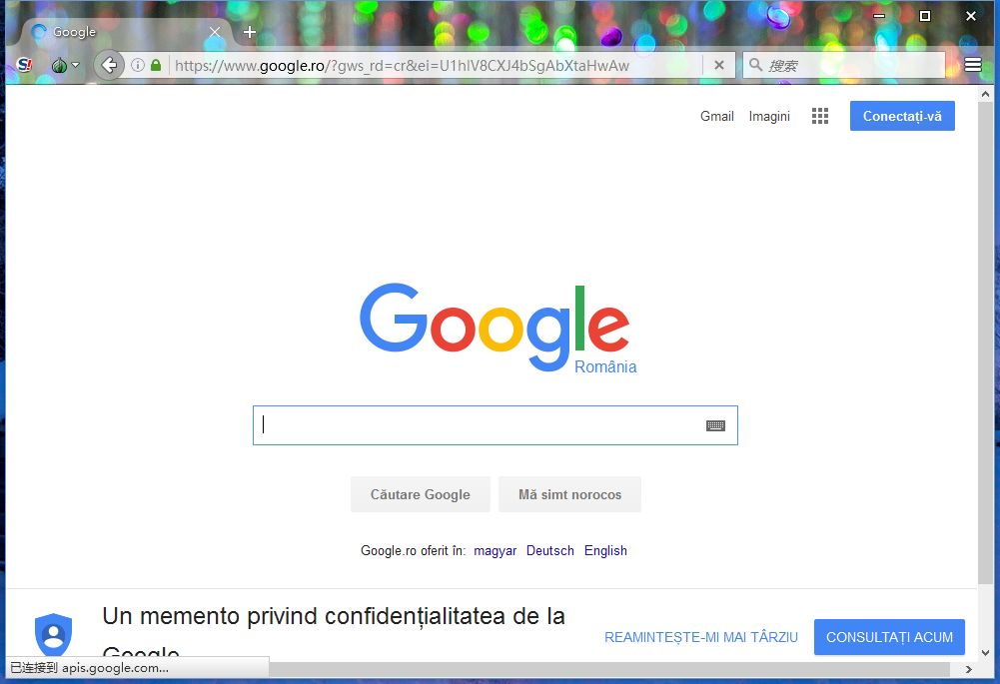
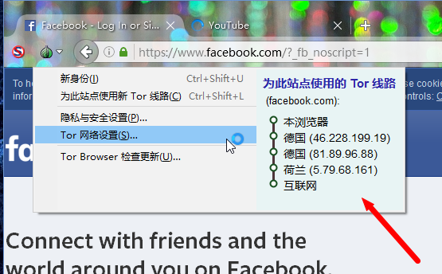

不得不说的科学上网浏览器：Tor Browser（洋葱浏览器）

可以访问大陆屏蔽了的国外网站
Tro本是通过多层代理节点用于实现匿名访问网络的浏览器，被更多用于访问暗网，在实现多节点代理的同时，也就使得大陆网络用户可以访问国外的网站，因为Tro用的代理节点全是国外的：

Tro并不好用
Tro和VPN相比天壤之别，Tro网络的链接速度非常非常慢（可能由于使用多层代理节点需要足够的服务器响应时间），并且Tro并不稳定，以前出现过一直无法连接网络的情况（现在好转）。
不过，当ISP封锁了Tro网络连接的时候，用户可以通过建立网桥来连接互联网， 还可以在Tro官网获得专属的网桥。
在大陆的网络环境下，可用的免费科学上网方法有限，Tro并不理想，但是喜欢折腾的友友可以试一试来玩，毕竟它是少有的匿名浏览器，黑客难以从用它浏览的站点上追踪到用户的访问信息。
Tro无法直接从官网下载（无法访问），只能从国内的软件下载站下载。
PS1：每天免费一小时的vpn赤兔（号称不限免费时长）：http://www.getchitu.cc
PS2：可用的可选择线路Chrome扩展：Jumbo Proxy Switcher.zip
PS3：二师兄（免费）VPN：http://2-vpn5.com/home.action（每三天登录激活）